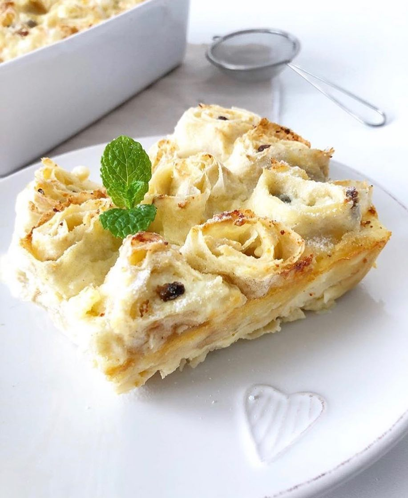

Zapekané palacinky s tvarohom podľa @lavas_zdravychlieb — Normy Jedál
Zdieľame 📷 a recept @ivaness_f. Krasa :) Dakujeme
*
Zapekane tvarohové palacinky s pudingom ❤️ a keďže bol záujem o receptik, spisujem 😊 skutočne odporúčam, lebo vďaka @lavas_zdravychlieb to bolo pomerne rýchle 😎
.
SUROVINY na formu s rozmermi približne 15x23cm
1 plát (špaldového) @lavas_zdravychlieb
Plnka:
250g hrudkovitého tvarohu
100g gréckeho jogurtu alebo jemného tvarohu
1 malé vajíčko
Sladidlo (erythritol, steviove kvapky od @stevielle
Hrsť hrozienok
Krém:
350ml mlieka
10g vanilkového pudingového prášku
20g vanilkového proteinu (voliteľné)
1 vajíčko
Sladidlo
10g ghee alebo obyčajného masla (voliteľné)
.
POSTUP
Vymiešame si suroviny na plnku. Lavas si nastriháme najprv na 3 časti (ako je zložený), a potom ešte každú časť na polovice, jednotlivé časti natierame plnkou, rolujeme a nakoniec nakrájame na asi 4cm vysoké časti (v závislosti od výšky formy). Časti palaciniek ukladáme do maslom alebo kokosovým olejom vymastenej a vysypanej zapekacej formy. Ručne si zmiešame suroviny na krém a vylejeme pomedzi palacinky (1cm vrch palaciniek ostal nenamočený v kréme, vďaka čomu ostal chrumkavý 👌🏼). Vrch palaciniek môžete ešte poliať roztopeným maslom. Palacinočky pečieme približne 40min. na 170 stupňov. Pred podávaním necháme aspoň 15 minút vychladiť. Môžeme posypať práškovým erythritolom a ozdobiť lístkom mäty alebo medovky. .
.
.
.
#dnesjem #dnesranajkujem #dnessnidam #fitfood #foodporn #foodgasm #foodphotography #fitnessjourney #fitnesslifestyle #bavimato #healthy #zdravejedlo #jemezdravoachutne #bojzanovytelo #uzasnejedlo #vkuchyni #pancakes #crepes #healthypancakes #fitpancakes #proteinpancakes #kosicefood #zdravepalacinky #lavas_zdravychlieb #zapekanepalacinkystvarohom #zapekanepalacinkyspudingom